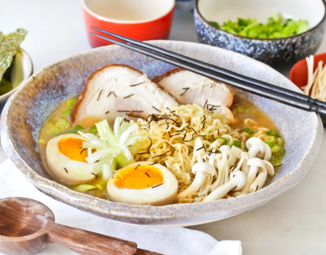
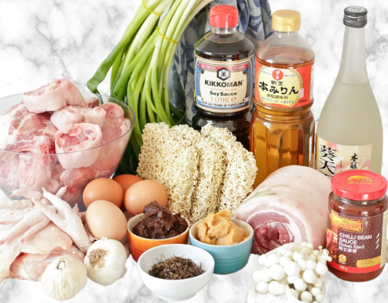

Receta
Ramen


Tiempo de Preparación:
45 minutos
Tiempo de Cocción:
12 horas
Tiempo Total:
12 horas y 45 minutos
Ingredientes
- • Para el Caldo:
- • 1kg de Cerdo
- • 1kg de Contra Muslos
- • 1 Cebolla
- • 1 Hoja de Alga Kombu
- • 1 Puerro
- • 1 trozo de Jengibre y Ajo
- • Sal y/o Pimienta al gusto
- • Para la Panceta:
- • 700gr de Panceta
- • 400gr de Tallarines Chukasoba
- • 3 Cebollas
- • 6 Cebollas de Verdeo
- • 250ml de Vino de Arroz
- • 250ml de Vino Dulce de Arroz
- • Para los Huevos Marinados:
- • 4 Huevos
- • 175ml de Vino de Arroz
- • 175ml de Vino Dulce de Arroz
- • 60gr de Azúcar
- • Salsa de Soja al gusto
- • Para el Ramen:
- • 4 Huevos marinados
- • 700gr de Panceta marinada
- • 1 Litro de caldo de Cerdo y de Pollo
- • 400gr de Tallarines Chukasoba
- • 1 Cebolla
- • 4 Cebollas de Verdeo
- • 4 Hojas de Alga Nori
- • 1 Setas Enoki
- • 1 Setas Shimeji
- • Salsa Picante Toban Djan al gusto
- • Aceite de Oliva
- • Sal y/o Pimienta al gusto
Preparación
- Para el Caldo:
- 1. Cortar los contra muslos en cubos.
- 2. Cocer el cerdo y los contra muslos, llevar a ebullición y retirar del fuego.
- 3. Lavar y cortar las verduras.
- 4. Cocer las carnes y las verduras a fuego lento por 12 horas.
- 5. Colar y dejar enfriar. Reservar en la nevera.
- Para la Pancenta:
- 4. Enrrollar la panceta con un hilo.
- 5. Lavar y cortar las verduras.
- 6. Calentar el horno a 130°C.
- 7. En una cazuela, añadir las verduras, el vino de arroz y el vino dulce de arroz.
- 8. Llevar a ebullición y retirar del fuego.
- 9. Agregar la panceta.
- 10. Tapar la cazuela y hornear por 4 horas, voltear a las 2 horas.
- 11. Retirar del horno y dejar enfriar, cortar el hilo.
- 12. Cortar la panceta en rodajas. Reservar en la nevera.
- Para los Huevos Marinados:
- 13. Colocar en un recipiente un papel de cocina en el fondo.
- 14. Cocer los huevos, a fuego bajo por 10 minutos, dejar enfriar y pelar.
- 15. Mezclar el azúcar, el vino de arroz, el vino dulce de arroz y la salsa de soja al gusto.
- 16. Verter la mezcla en el recipiente y colocar los huevos.
- 17. Cubrir la mezcla y los huevos con un papel de cocina, y dejar marinar por 12 horas en la nevera.
- 18. Luego de pasado el tiempo del marinado, escurrir, cortar a la mitad los huevos y reservar en la nevera.
- Para el Ramen:
- 19. Hervir el caldo y el caldo de la panceta.
- 20. Lavar y cortar las verduras.
- 21. Cortar las puntas de las cebollas de verdeo y reservar en agua fría.
- 22. Cocer los tallarines en el caldo, escurrir y dividir en cuatro porciones.
- 23. Agregar el caldo de ramen a las cuatro porciones.
- 24. Añadir la cebolla de verdeo previamente picada.
- 25. Agregar la panceta, los huevos marinados, las verduras, la sal y la pimienta al gusto.
- 26. Espolvorear el alga nori.
- 27. Servir.